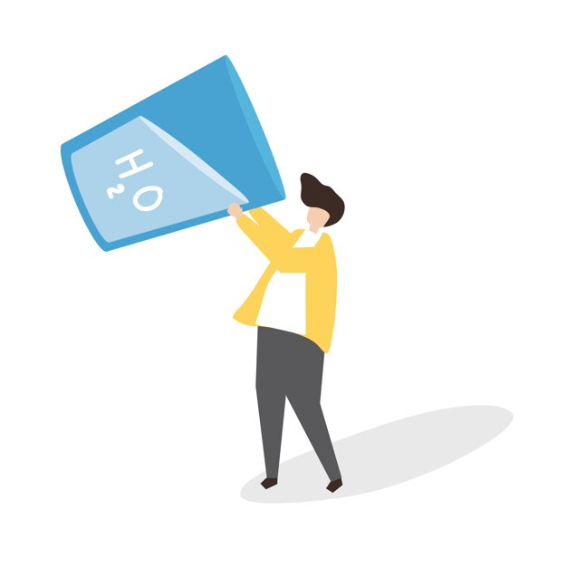

Quantos litos de água beber por dia?

Suas necessidades gerais de água podem ser determinadas usando seu peso corporal atual. A maioria das pessoas precisa beber cerca de metade a dois terços de seu peso (em libras) em onças. Por exemplo, um adulto de 90 kg precisa de aproximadamente 4436,03ml de água por dia.
Claro, suas necessidades de água aumentarão com qualquer atividade física. Portanto, você precisará adicionar 12 onças de água a cada 30 minutos de atividade diária.
200 x 2/3 = 4436,03
Por exemplo, um adulto de 90 kg que se exercita em média 45 minutos por dia precisará de aproximadamente 168 onças de água por dia.
4436,03ml + (12 x 1,5) = 4968,35ml
As necessidades de água também podem variar com o clima - você geralmente precisa de mais fluidos em temperaturas quentes e úmidas para reduzir o risco de superaquecimento.
Leia Mais